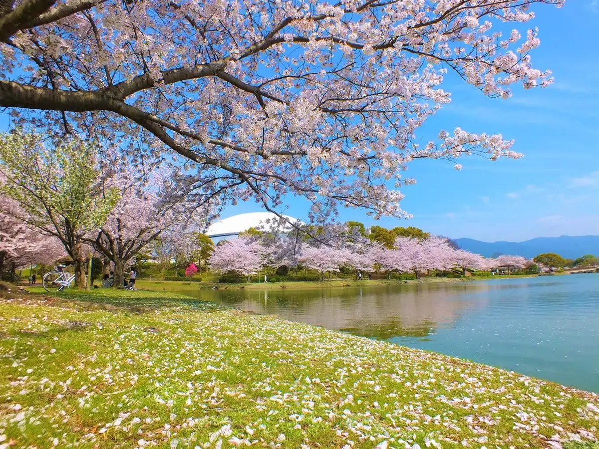
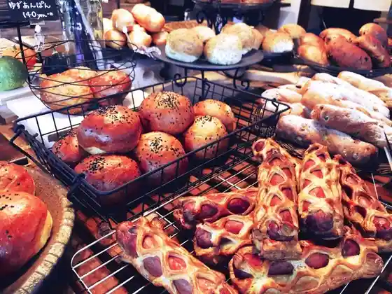
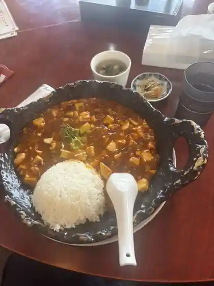
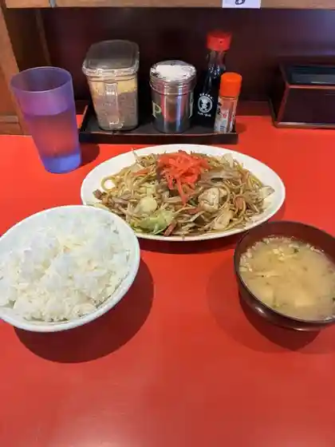
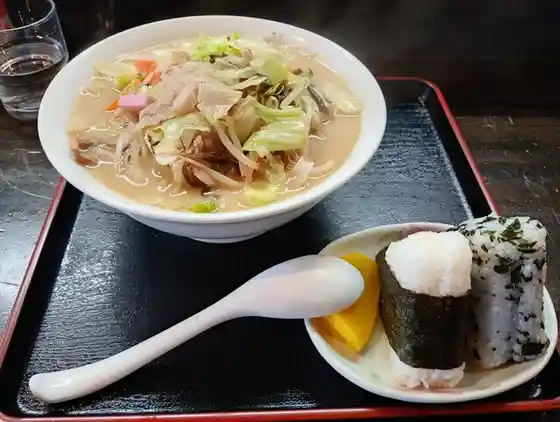
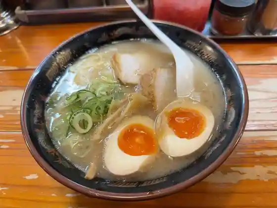
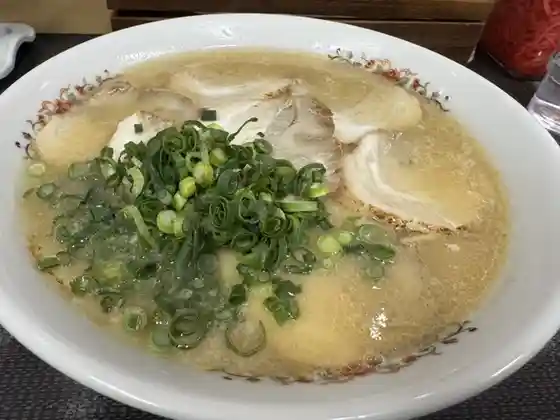
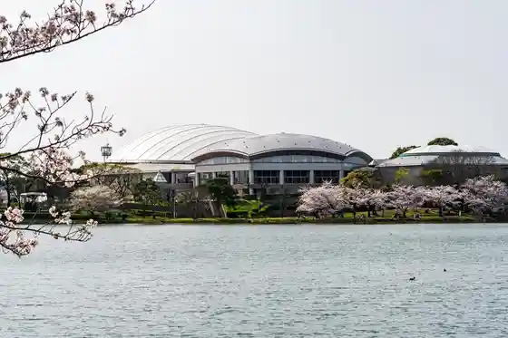
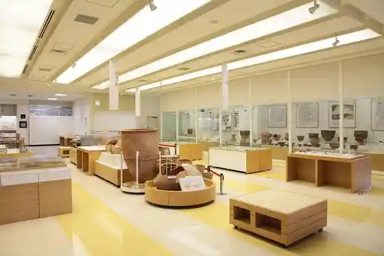
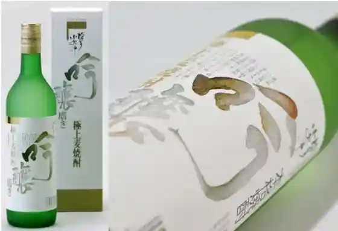

Kasuya
Kasuya · Fukuoka
Kasuya
Highlighted on the Fukuoka map.

Dining
一九ラーメン 糟屋店
Ikku Raamen Kasuya Mise
山椒の木
Sanshou No Ki
1954 Fukuoka
1954 Fukuoka

YORIMICHI
YORIMICHI

中華料理 香香
Chuukaryouri Kouko

まるやすのちゃんぽん
Maruyasunochanpon

吉ひろ
Kichi Hiro

麺屋ラ賊
Men Ya Ra Zoku

ラーメン将峰
Raamen Shou Mine
Hamburg Mafia
Hamburg Mafia
天天,有
Tenten , Ari
喰焼処
Shoku Yaki Tokoro
官兵衛うどん
Kanbee Udon
びっくり亭 粕屋店
Bikkuri Tei Kasuya Mise
スタミナ焼肉鉄板王 空港東店
Sutamina Yakiniku Teppan Ou Kuukou Higashi Mise
ハンバーガー工房 grin grin
grin grin
きねや 流通店
Kineya Ryuutsuu Mise
粕屋町中華料理 ニューハナチャイナ
Kasuya Machijuu Hana Ryouri Nyuuhanachaina
豚ステーキ十一 仲原店
Buta Suteeki Juuichi Nakahara Mise
グレイス ガーデン ナチュレ
Gureisu Gaaden Nachure
幸
Sachi
長浜ラーメン 味のまんぷく
Nagahama Raamen Aji Nomanpuku
恵比寿や
Ebisu Ya
五穀 イオンモール福岡店
Gokoku Ionmooru Fukuoka Mise
博多久松
Hakata Hisamatsu
なにわお好み焼き ぼちぼち
Naniwao Konomi Yaki Bochibochi
鳥〇食堂×タニタカフェ イオンモール福岡店
Tori (maru) Shokudo X Tanitakafe Ionmooru Fukuoka Mise
新和食 馳
Shinwa Shoku Chi
てんぷら一代
Tenpura Ichidai
パンのマグ
Pan No Magu
石釜パン工房 KIRARI
KIRARI
韓美里
Kan Misato
サクレクール
Sakurekuuru
パントリエ イオンモール福岡店
Pantorie Ionmooru Fukuoka Mise
JACK IN THE DONUTS イオンモール福岡店
JACK IN THE DONUTS
HEART BREAD ANTIQUE イオンモール福岡店
HEART BREAD ANTIQUE
coharune
coharune
スパイス食堂and N
and N
辛麺&チキン南蛮 桝元 イオンモール福岡店
Shin Men & Chikin Nanban Masu Moto Ionmooru Fukuoka Mise
カレー&フレンチトースト Hono
Karee & Furenchitoosuto Hono
濵かつ イオンモール福岡店
Tsu Ionmooru Fukuoka Mise
たかばしBake
Bake
麦とろ＆韓
Mugi Toro & Kan
肉肉うどん 粕屋店
Niku Niku Udon Kasuya Mise
桃香・中華の店
桃香・中華の店
みらく 糟屋店
Miraku Kasuya Mise
博多唐揚げ もんどりあん
Hakata Karaage Mondorian
パティスリーマルジョレーヌ
Pateisuriimarujoreenu
ベーベの気持ち イオンモール福岡店
Beebe No Kimochi Ionmooru Fukuoka Mise
和み縁ゆいゆい
Nagomi Heri Yuiyui
丸亀製麺 イオンモール福岡店
Marugame Seimen Ionmooru Fukuoka Mise
ぎゅう丸 イオンモール福岡店
Gyuu Maru Ionmooru Fukuoka Mise
かんざし イオンモール福岡店
Kanzashi Ionmooru Fukuoka Mise
居酒屋 ○○家
Izakaya ○ ○ Ie
居酒屋本陣
Izakaya Honjin
京都北白川ラーメン魁力屋 イオンモール福岡店
Kyouto Kitashirakawa Raamen Kai Chikara Ya Ionmooru Fukuoka Mise
憩い家 つねさん
Ikoi Ie Tsunesan
イチリュウ イオン福岡店
Ichiryuu Ion Fukuoka Mise
ナガモトコーヒー店
Nagamotokoohii Mise
むぎくらべカフェ
Mugikurabe Kafe
紅虎餃子房 イオンモール福岡店
Kouko Gyouza Bou Ionmooru Fukuoka Mise
双葉ラーメン
Futaba Raamen
町田商店 イオンモール福岡店
Machida Shouten Ionmooru Fukuoka Mise
イザカヤ クウカイ 粕屋店
Izakaya Kuukai Kasuya Mise
旨屋
Mune Ya
焼肉ＫＡＮ
Yakiniku Kan
Flat
Flat
ピエトロ イオンモール福岡店
Pietoro Ionmooru Fukuoka Mise
築地食堂 源ちゃん イオンモール福岡店
Tsukiji Shokudo Gen Chan Ionmooru Fukuoka Mise
赤から 福岡東店
Akaka Ra Fukuoka Higashi Mise
博多ダーメン屋
Hakata Daamen Ya
そばと和食 麦福 イオンモール福岡店
Sobato Washoku Mugi Fuku Ionmooru Fukuoka Mise
駅前カフェ サカヤ
Ekimae Kafe Sakaya
中華料理 福香餃子
Chuukaryouri Fuku Kaori Gyouza
ぐらんぱ
Guranpa
炭焼dining 漁火
dining
メルシー
Merushii
くだものカフェ イオン福岡店
Kudamono Kafe Ion Fukuoka Mise
Chi-ya Cafe & Flower
Chi-ya Cafe & Flower
ZETTERIA イオンモール福岡店
ZETTERIA
bagel TORICO
bagel TORICO
かつや 福岡インター店
Katsuya Fukuoka Intaa Mise
スターバックス・コーヒー イオンモール福岡店
スターバックス・コーヒー イオンモール福岡店
リンガーハット 福岡長者原店
Ringaahatto Fukuoka Choujagahara Mise
とんかつ 濵かつ 福岡粕屋店
Tonkatsu Tsu Fukuoka Kasuya Mise
揚げたて天婦羅 那かむら イオンモール福岡店
Age Tate Tenpura Na Kamura Ionmooru Fukuoka Mise
サロン卵と私 イオンモール福岡店
Saron Tamago To Watashi Ionmooru Fukuoka Mise
コメダ珈琲店 福岡粕屋店
Komeda Koohii Mise Fukuoka Kasuya Mise
久世福商店 イオンモール福岡店
Kuze Fuku Shouten Ionmooru Fukuoka Mise
Lilyロール
Lily
シュシュクレープ イオンモール福岡店
Shushukureepu Ionmooru Fukuoka Mise
喫茶 陽だまり
Kissa You Damari
長者原饅頭
Choujagahara Manjuu
串家物語 イオンモール福岡店
Kushi Ie Monogatari Ionmooru Fukuoka Mise
ミスタードーナツ イオンモール福岡ショップ
Misutaadoonatsu Ionmooru Fukuoka Shoppu
柿安 口福堂 イオンモール福岡店
Kakiyasu Koufuku Dou Ionmooru Fukuoka Mise
サンマルクカフェ イオンモール福岡店
Sanmarukukafe Ionmooru Fukuoka Mise
築地 銀だこ イオンモール福岡店
Tsukiji Gin Dako Ionmooru Fukuoka Mise
ペッパーランチ イオンモール福岡店
Peppaaranchi Ionmooru Fukuoka Mise
CoCo壱番屋 福岡門松店
Coco Ichiban Ya Fukuoka Kadomatsu Mise
サーティワンアイスクリーム イオンモール福岡店
Saateiwan'aisukuriimu Ionmooru Fukuoka Mise
しゃぶ葉 イオンモール福岡店
Shabu Ha Ionmooru Fukuoka Mise
バーガーキング イオンモール福岡店
Baagaakingu Ionmooru Fukuoka Mise
タリーズコーヒー フタバ図書TERAイオンモール福岡店
Tariizukoohii Futaba Tosho Tera Ionmooru Fukuoka Mise
カフェファディ 粕屋仲原店
Kafefadi Kasuya Nakahara Mise
GODIVA イオンモール福岡店
Godiva Ionmooru Fukuoka Mise
ビビン亭 イオンモール福岡店
Bibin Tei Ionmooru Fukuoka Mise
コメダ珈琲店 イオンモール福岡店
Komeda Koohii Mise Ionmooru Fukuoka Mise
ディッパーダン イオンモール福岡店
Dippaadan Ionmooru Fukuoka Mise
パン工場 福岡東店
Pan Koujou Fukuoka Higashi Mise
ビアードパパ イオンモール福岡店
Biaadopapa Ionmooru Fukuoka Mise
となりの山椒の木
Tonarino Sanshou No Ki
しめ手羽 粕屋別館
Shime Teba Kasuya Bekkan
ひので屋 流通店
Hinode Ya Ryuutsuu Mise
ぐー・ちょき・ぱん
ぐー・ちょき・ぱん
ミスターマックス粕屋店ベーカリーコーナー
Misutaamakkusu Kasuya Mise Beekariikoonaa
珈琲苑やまもと
Koohii En Yamamoto
和食海鮮料理旬彩みやび
Washoku Kaisen Ryouri Jun Sai Miyabi
ワンダー カフェ 福岡東店
Wandaa Kafe Fukuoka Higashi Mise
吉野家 粕屋仲原店
Yoshinoya Kasuya Nakahara Mise
やよい軒 粕屋仲原店
Yayoi Ken Kasuya Nakahara Mise
九州名物とめ手羽 仲原店
Kyuushuu Meibutsu Tome Teba Nakahara Mise
唐十 イオンモール福岡店
Tou Juu Ionmooru Fukuoka Mise
CoCo壱番屋 福岡インター店
Coco Ichiban Ya Fukuoka Intaa Mise
カルディコーヒーファーム イオンモール福岡店
Karudikoohiifaamu Ionmooru Fukuoka Mise
酔処 旬
Sui Tokoro Jun
竹やぶ
Take Yabu
犬カフェ Rio 福岡店
Inu Kafe Rio Fukuoka Mise
駅前食処いさりび
Ekimae Shoku Tokoro Isaribi
LET'SINASAL
LET&39SINASAL
銀座惣菜店 イオンモール福岡店
Ginza Souzai Mise Ionmooru Fukuoka Mise
牛角 仲原店
Gyuukaku Nakahara Mise
マクドナルド 門松店
Makudonarudo Kadomatsu Mise
ケンタッキーフライドチキン イオンモール福岡店
Kentakkiifuraidochikin Ionmooru Fukuoka Mise
元祖辛麺屋 桝元 イオンモール福岡店
Ganso Shin Men Ya Masu Moto Ionmooru Fukuoka Mise
ゴンチャ イオンモール福岡店
Goncha Ionmooru Fukuoka Mise
スターバックスコーヒー イオンモール福岡2階店
Sutaabakkusukoohii Ionmooru Fukuoka 2 Kai Mise
ほっともっと 粕屋仲原店
Hottomotto Kasuya Nakahara Mise
クニズ イオンモール福岡店
Kunizu Ionmooru Fukuoka Mise
マクドナルド イオンモール福岡店
Makudonarudo Ionmooru Fukuoka Mise
すき家 粕屋仲原店
Suki Ie Kasuya Nakahara Mise
サーティワンアイスクリーム イオンモール福岡 フードパーク店
Saateiwan'aisukuriimu Ionmooru Fukuoka Fuudopaaku Mise
パオクレープミルク イオンモール福岡店
Paokureepumiruku Ionmooru Fukuoka Mise
銀座コージーコーナー イオン福岡店
Ginza Koojiikoonaa Ion Fukuoka Mise
モーメント 福岡本店
Moomento Fukuoka Honten
鮨ダイニング結喜家
Sushi Dainingu Ketsu Ki Ie
うえすたん本部手作りハム工房
Uesutan Honbu Tezukuri Hamu Koubou
居酒屋 もり
Izakaya Mori
ちくごや
Chikugoya
イオンシネマ 福岡
Ionshinema Fukuoka
居酒屋てら田
Izakaya Tera Ta
古じょう庵 イオン福岡東店
Ko Jou Iori Ion Fukuoka Higashi Mise
レモネード バイ レモニカ イオンモール福岡店
Remoneedo Bai Remonika Ionmooru Fukuoka Mise
ダイキョーバリュー 長者原店
Daikyoobaryuu Choujagahara Mise
麩稲豊
Fu Inatoyo
cakehouse AN イオンモール福岡店
cakehouse AN
やきとり 史
Yakitori Shi
MOTHER'S CREPE&CAFE
MOTHER&39S CREPE&CAFE
ひよ子本舗 吉野堂 イオンモール福岡店
Hiyo Ko Honpo Yoshino Dou Ionmooru Fukuoka Mise
とよ唐亭 原町駅前店
Toyo Tou Tei Haramachi Ekimae Mise
ワンミリオンベーカリー 粕屋店
Wanmirionbeekarii Kasuya Mise
Mishima
Mishima
焼鳥 山
Yakitori Yama
湖月堂 イオンモール福岡店
Kogetsu Dou Ionmooru Fukuoka Mise
如水庵 イオンモール福岡店
Josui Iori Ionmooru Fukuoka Mise
ほっともっと 長者原店
Hottomotto Choujagahara Mise
SUMOMO BAKERY 粕屋店
SUMOMO BAKERY
桝元 イオンモール福岡
Masu Moto Ionmooru Fukuoka
純一 粕屋店
Jun'ichi Kasuya Mise
とよ唐亭 門松店
Toyo Tou Tei Kadomatsu Mise
サーティワンアイスクリーム イオンモール福岡フードフォレスト店
Saateiwan'aisukuriimu Ionmooru Fukuoka Fuudoforesuto Mise
石村萬盛堂 イオン福岡店
Ishimura Man Jou Dou Ion Fukuoka Mise
LAWSON 長者原店
LAWSON
麦とろ＆韓 イオンモール福岡店
Mugi Toro & Kan Ionmooru Fukuoka Mise
おいもびより
Oimobiyori
千鳥屋原町店
Chidori Ya Haramachi Mise
いもっこシルバー
Imokko Shirubaa
ひょっとこ
Hyottoko
明月堂 イオン福岡店
Meigetsu Dou Ion Fukuoka Mise
55DOG
55DOG
シュリンプモアニ
Shurinpumoani
だるま
Daruma
ファミリーマート 粕屋門松店
Famiriimaato Kasuya Kadomatsu Mise
居酒屋 眞
Izakaya Makoto
つむぎごはん
Tsumugigohan
光酒造株式会社
Hikari Shuzou Kabushikigaisha
駄菓子の下町屋
Dagashi No Shimomachiya
TRIALsmart 粕屋店
TRIALsmart
LAWSON 福岡魁誠高校前店
LAWSON
セブンイレブン 粕屋内橋店
Sebun'irebun Kasuya Uchihashi Mise
デイリーヤマザキ 粕屋駕与丁店
Deiriiyamazaki Kasuya Ga Yo Chou Mise
ルピシア イオンモール福岡店
Rupishia Ionmooru Fukuoka Mise
谷口商店
Taniguchi Shouten
居酒屋来福
Izakaya Raifuku
セブンイレブン 粕屋若宮1丁目店
Sebun'irebun Kasuya Wakamiya 1 Choume Mise
ピザポケット 仲原店
Pizapoketto Nakahara Mise
セブンイレブン 粕屋原町駅前店
Sebun'irebun Kasuya Haramachi Ekimae Mise
セブンイレブン 粕屋丸の内店
Sebun'irebun Kasuya Marunouchi Mise
無印良品 イオンモール福岡
Mujirushiryouhin Ionmooru Fukuoka
双葉ラーメン 支店
Futaba Raamen Shiten
富澤商店 イオンモール福岡店
Tomizawa Shouten Ionmooru Fukuoka Mise
中村屋
Nakamuraya
大久醤油
Oohisa Shouyu
ハッピー農園
Happii Nouen
グリーンマーケットMOA 粕屋店
Guriinmaaketto Moa Kasuya Mise
ランチショップ グリルK
Ranchishoppu Guriru K
シルクロード
Shirukuroodo
サーティワンアイスクリーム イオンモール福岡店
Saateiwan'aisukuriimu Ionmooru Fukuoka Mise
吉田青果
Yoshida Seika
松廼家
Matsu No Ie
酵素玄米 cafe山ぽ
cafe
志賀
Shiga
割烹 ともや
Kappou Tomoya
カラオケ館 福岡粕屋店
Karaoke Kan Fukuoka Kasuya Mise
Grace Garden Nature
Grace Garden Nature
Ikkyuramen
Ikkyuramen
Pietro Aeon Mall Fukuoka
Pietro Aeon Mall Fukuoka
Shin Japanese Restaurant Hase
Shin Japanese Restaurant Hase
Benitora Gyozabo AEON MALL Fukuoka
Benitora Gyozabo AEON MALL Fukuoka
SUKE SAN Udon Kadomatsu
SUKE SAN Udon Kadomatsu
Chinese Restaurant Rishan
Chinese Restaurant Rishan
Ringer Hut Fukuoka Chojabaru
Ringer Hut Fukuoka Chojabaru
Gyukaku Nakabaru
Gyukaku Nakabaru
Saboten Aeon Mall Fukuoka
Saboten Aeon Mall Fukuoka
Takenoya Nakabaru
Takenoya Nakabaru
Teppano Kuko Higashi
Teppano Kuko Higashi
Roast Beef Hoshi Aeon Mall Fukuoka
Roast Beef Hoshi Aeon Mall Fukuoka
Egao
Egao
Chojabaru Manju
Chojabaru Manju
McDonald s Kadomatsu
McDonald s Kadomatsu
Umaya
Umaya
Western Yusu Ekimae
Western Yusu Ekimae
Gyumaru Hukuoka Rukuru
Gyumaru Hukuoka Rukuru
31 Ice Cream
31 Ice Cream
Furutto Italian Restaurant
Furutto Italian Restaurant
Hairpin
Hairpin
Kabushiki Gaisha West Nakabaru
Kabushiki Gaisha West Nakabaru
Ringer Hut Premium Aeon Mall Fukuoka
Ringer Hut Premium Aeon Mall Fukuoka
Maru Maru Ya
Maru Maru Ya
Mister Donut Aeon Mall Fukuoka
Mister Donut Aeon Mall Fukuoka
Genchan Aeon Mall Fukuoka
Genchan Aeon Mall Fukuoka
Ikoiya Tsunesan
Ikoiya Tsunesan
Nikyoku
Nikyoku
Coffee En Yamamoto
Coffee En Yamamoto
Men Ya Kiwami Kasuya
Men Ya Kiwami Kasuya
Hakata Damen Ya
Hakata Damen Ya
Okaru
Okaru
Sushi Zammai Kasuya Airport East
Sushi Zammai Kasuya Airport East
Fubi Aeon Mall Fukuoka
Fubi Aeon Mall Fukuoka
Hakata Ichibandori Ishokuya Arai Harumachi Ekimae
Hakata Ichibandori Ishokuya Arai Harumachi Ekimae
Meimon
Meimon
Nakabaru Hachiemon
Nakabaru Hachiemon
Pomu No Ki Second Kitchen Aeon Mall Fukuoka
Pomu No Ki Second Kitchen Aeon Mall Fukuoka
Toyo Karatei Chojahara
Toyo Karatei Chojahara
Pastry Shop Sacre Coeur
Pastry Shop Sacre Coeur
Shoho Ramen
Shoho Ramen
Sakaya Ekimae
Sakaya Ekimae
Toka Chinese Restaurant
Toka Chinese Restaurant
Pisolino Kasuya
Pisolino Kasuya
Nikotto
Nikotto
Koraku
Koraku
Miyuki
Miyuki
Gindaco Aeon Mall Fukuoka
Gindaco Aeon Mall Fukuoka
Sansho No Ki
Sansho No Ki
Pietro Fukuoka Lucle
Pietro Fukuoka Lucle
Shichirinyaki Mori Mori Horumon
Shichirinyaki Mori Mori Horumon
Ushidaijin
Ushidaijin
Potari
Potari
Chinese Cuisine Toka
Chinese Cuisine Toka
Futoppara
Futoppara
Fuiyu
Fuiyu
Daiichiro Jusco Fukuoka Higashi
Daiichiro Jusco Fukuoka Higashi
Daihachi Takohanamaru Aeon Mall Fukuoka
Daihachi Takohanamaru Aeon Mall Fukuoka
Marugame
Marugame
Kurata
Kurata
Jimmy S Steakhouse Nakahara
Jimmy S Steakhouse Nakahara
Shijan Fukuoka Aeon Mall
Shijan Fukuoka Aeon Mall
Nagahama Ramen Ryotei
Nagahama Ramen Ryotei
Kuyakusho
Kuyakusho
Lunch Wakita
Lunch Wakita
Yanakawaya
Yanakawaya
Murphy s French Fries
Murphy s French Fries
Sandai
Sandai
Yutaka Shokudo
Yutaka Shokudo
Leaves
Leaves
Nagao Honjin Kasuyajo
Nagao Honjin Kasuyajo
Buffet Style Assort Aeon Mall Fukuoka
Buffet Style Assort Aeon Mall Fukuoka
Maryland Kasuya
Maryland Kasuya
Den Sushi
Den Sushi
Hakata Ichibandori Kyoshokuya Arai Fc Haramachi Ekimae
Hakata Ichibandori Kyoshokuya Arai Fc Haramachi Ekimae
Hong Kong Chubo Aeon Mall Fukuoka
Hong Kong Chubo Aeon Mall Fukuoka
Dejiya
Dejiya
Vegetable Sommelier Shokudo
Vegetable Sommelier Shokudo
Isokko
Isokko
Gyumaru Aeon Mall Fukuoka
Gyumaru Aeon Mall Fukuoka
Bamboo Grove
Bamboo Grove
Mutchan Manju Chojabaru
Mutchan Manju Chojabaru
Hime Daruma
Hime Daruma
Sendai Beef Tongue Story
Sendai Beef Tongue Story
The Kitchen of the Five Grains Sum
The Kitchen of the Five Grains Sum
Nakatsu Horaiken
Nakatsu Horaiken
Snack Lady
Snack Lady
Artisanal bakery Sasayama
Artisanal bakery Sasayama
Akiya Japanese Dining
Akiya Japanese Dining
Zen
Zen
Hakata Ramen Ebisu
Hakata Ramen Ebisu
Kaisen Ippachi Nakabaru
Kaisen Ippachi Nakabaru
Hakata Nagahama Ramen Ichi
Hakata Nagahama Ramen Ichi
Sights
Ga Yo Cho Park
Chikyu no Niwa Fukuoka Mise
Kasuya Sogo Gym (Kasuya Domu)

Kasuya Ritsu History Museum

Hikari Shuzo

Na no Mi Village
Osumi Sekkan
Hiratsuka Burial Mound